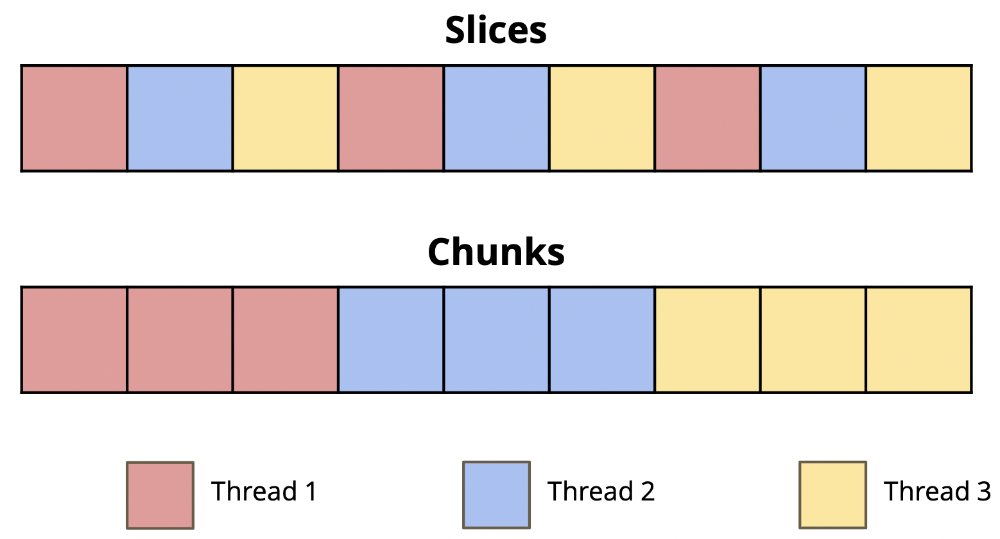

Lab 9: Thread-Level Parallelism
Deadline: Monday, April 18, 11:59:59 PM PT
Setup
Warning: We strongly recommend working on the hive machines for this lab. OpenMP may perform differently on your local machine, and installing it can be annoying.
In your labs directory, pull the files for this lab with:
Info: OpenMP
OpenMP stands for Open specification for Multi-Processing. It is a framework that offers a C interface. It is not a built-in part of the C language -- most OpenMP features are compiler directives. (One example of a compiler directive you've seen in the past is #include.)
Benefits of multi-threaded programming using OpenMP include:
- A very simple interface that allows a programmer to separate a program into serial regions and parallel regions.
- Convenient synchronization control (data race bugs in threads are very hard to trace).
In this lab, we'll practice some basic usage of OpenMP. OpenMP is already installed on hive machines, so we strongly recommend that you work on the hive machines for this lab.
Exercise 1: OpenMP Hello World
Consider the sample hello world program (hello.c), which prints "hello world from thread #" from each thread:
int
This program will create a team of parallel threads. Each thread prints out a hello world message, along with its own thread number.
Let's break down the #pragma omp parallel line:
#pragmatells the compiler that the rest of the line is a directive.ompdeclares that the directive is for OpenMP.parallelsays that the following block statement -- the part inside the curly braces ({/}) -- should be executed in parallel by different threads.
IMPORTANT When writing your own code, ensure that you place the opening curly brace on a new line. Do not put it on the same line as the directive.
You can change the number of OpenMP threads by setting the environment variable OMP_NUM_THREADS or by using the omp_set_num_threads function before the parallel section in your program.
Try running the program:
If you run ./hello a couple of times, you may notice that the printed numbers are not always in increasing order and will most likely vary across runs. This is because we didn't specify any sort of synchronization options, so OpenMP will not enforce any execution order. (More on that later.) It is also vital to note that the variable thread_id is defined inside the parallel block, so it is local to each thread and not shared across all threads. In general with OpenMP, variables declared inside the parallel block will be private to each thread, but variables declared outside a parallel block will be shared across all threads. Again, there are ways to override this, but more on that later.
Exercise 2: Vector Addition
Vector addition is a naturally parallel computation, since it's an elementwise operation (element i of the result vector does not depend on elements j != i), so it makes for a good first exercise. The v_add() functions inside omp_apps.c will store the sum of input vectors x and y into the result vector z. A first attempt at this might look like:
void
Try running the tests:
The testing framework will time the function execution for different thread counts. You should observe that this implementation performs worse as we increase the number of threads! Why?
The issue is that each thread is executing all of the code within the omp parallel block. If we have 8 threads, we'll actually be performing the same vector addition 8 times! Not only that, but various threads writing to the same variables in memory may cause a decrease in performance due to cache synchronization. Rather than have each thread run every iteration of the for loop, we need to split the for loop iterations across all the threads so each thread does only a portion of the work.
The good news is that OpenMP has built-in functionality for dividing up the work of for loops among threads. The bad news is that for this exercise, we'd like you to first try splitting the for loop iterations among threads manually. Let's try to understand a couple methods we could use to divide the work, and the benefits/drawbacks of each way. You cannot use the OpenMP for directive for this exercise, but this is how you'd use that directive:
void
The two differences between this example and the previous one are: 1), the for at the end of the directive, and 2), the lack of opening and closing brackets around the parallel section. The #pragma omp parallel for directive needs only to be placed directly before a for loop; brackets are not required. Again, remember that for this exercise, you cannot use this directive.
Your task is to optimize v_add(). Remember that speedup may increase slower after a certain number of threads, since part of the whole program is not parallelizable. Your implementations should use the following 2 functions -- don't hardcode thread counts or thread IDs:
int omp_get_num_threads()- returns the current total number of OpenMP threads. Note that the number of threads will be1outside of an OpenMPparallelsection.int omp_get_thread_num()- returns the thread number of the current thread, commonly used as thread ID.
Action Items
The functions you'll be implementing are in omp_apps.c.
Start with implementing v_add_optimized_adjacent(), which separates the vectors into element-wise slices. Each thread handles "adjacent" sums; in other words, thread 0 will add the elements at indices where i % num_threads == 0, thread 1 will add the elements at indices where i % num_threads == 1, and so on.
Then, implement v_add_optimized_chunks() which separates the vectors into contiguous chunks. As an example, if we have 3 threads, thread 0 will handle the first third of the elements in the array, thread 1 will handle the third quarter, and thread 3 will handle the last third. Remember to handle the "tail case" -- depending on your chunking logic, the last chunk may have slightly more or less elements than the others.

Question
Which version of your code runs faster, chunks or adjacent? Why?
Chunks performs better than adjacent because adjacent indexing is more susceptible to false sharing: when different threads write to different elements in the same cache block in their own cache.Exercise 3: Dot Product
The next task is to compute the dot product of two vectors. At first glance, implementing this might seem not too different from v_add, since we should now just perform elementwise multiplication instead of addition. The challenge is how to add the products into one variable (reduction) to get our final answer. If multiple threads try to add their results to the same variable at the same time, it will lead to a data race which will result in an incorrect result.
One solution is to use a critical section. The code in a critical section can only be executed by a single thread at any given time. Thus, having a critical section naturally prevents multiple threads from reading and writing to the same data, a problem that would otherwise lead to data races. OpenMP provides the critical primitive to allow you to perform computations within a critical section. An implementation, dotp_naive() in omp_apps.c, protects the sum with a critical section.
Try running the tests:
Notice how the performance gets much worse as the number of threads goes up? By putting all of the work of reduction in a critical section, we have flattened the parallelism and made it so only one thread can do useful work at a time (not exactly the idea behind thread-level parallelism). This contention is problematic; each thread is constantly fighting for the critical section and only one is making any progress at any given time. As the number of threads goes up, so does the contention, and the performance pays the price. Can we reduce the number of times that each thread needs to use a critical section?
Action Items
The methods you'll be implementing are in omp_apps.c.
First, let's fix this performance problem without using the reduction keyword. Write your implementation in dotp_manual_optimized(). Remember that we want to reduce the number of times each thread enters the critical section.
Next, let's fix this problem using OpenMP's built-in reduction keyword. Write your implementation in dotp_reduction_optimized(). Note that your code should no longer contain #pragma omp critical.
Exercise 4: Feedback Form
We are working to improve the labs for next semester, so please fill out this survey to tell us about your experience with Lab 9. The survey will be collecting your email to verify that you have submitted it, but your responses will be anonymized before the data is analyzed. Thank you!
Submission
Save, commit, and push your work, then submit to the Lab 9 assignment on Gradescope.